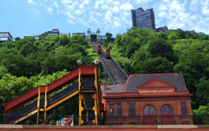
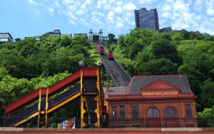

Duquesne Incline
Take a step back in time on a century-old cable car and see the best views of downtown Pittsburgh while riding one of the few remaining inclines in the country. Opened on May 20, 1877, the Duquesne Incline was rescued and restored by a group of local residents in 1963 and still delights residents and visitors with its original, elegant, wooden cable cars. Now you can visit the interior of the incline and watch the machinery while it operates. The Duquesne Incline's upper station houses a museum of Pittsburgh history, including photos and a storehouse of information on inclines from around the world. Unusual Pittsburgh souvenirs, maps and photos can be found at the gift shop.
Photo Gallery

 



Nothing says "Pittsburgh" quite like the Duquesne Incline. Check out the latest "Only in PGH" video to see why this place keeps on rolling after nearly 140 years of getting visitors up and down Mt. Washington in charming fashion.